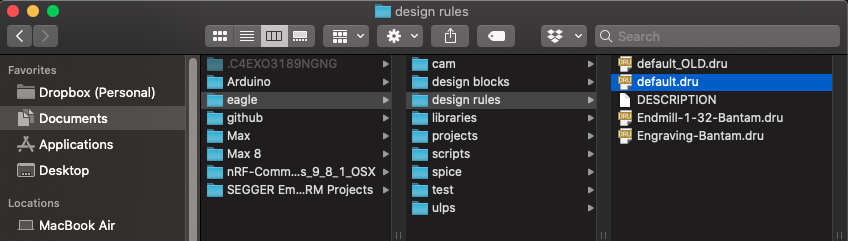

The final steps needed when making our PCB at a "real-world" PCB manufacturer.
When ordering a PCB, you have two options:
When ordering PCBA, you often have two options for how the manufacturer will get the components. Either they order them themselves, or you mail them your parts (or some of your parts). If they are not able to find a part, then you can ask them to simply not assemble it and you can then solder it yourself when you get the boards.
As you might have already guessed, PCBA order can cost much more than PCB orders, especially when ordering just a few board. The machines that are used to not only create the PCB, but to then add solder paste and place your components, those machines require time to setup just your design. Whether you are making 3 or 300 boards, that same amount of time must be spent to setup the machines for your design.
There are many PCB/PCBA suppliers to pick from, some in the USA and most in China. Because all of them are different, and require different files and information, this guide will not go into any detail about how to use each individual supplier.
However, here is a short list of suppliers that I have personally used successfully:
When making your PCB with a real manufacture, there are many more things you can do on the board design. For example, your routes can be thinner, and your vias can be smaller and will be filled with copper (nice!).
So, before doing anything to your Eagle design, you'll want to make sure that the Design Rule Check (DRC) settings are setup for designing like this.
If you remember in the first Eagle guide (Eagle Setup), we placed our own .DRU file in Eagle's design-rules directory. The original .DRU is hopefully still there, and you named it something like default_OLD.dru
When using the design rules that we copied over during that guide, we are following the rule settings from Bantam. These are what force our routes to be bigger, our vias to be bigger, and our ground planes isolated farther away from things. See the image below as to what that looks like in a board design.
If I want to make the ground plane closer to things, then I'll need to change my DRC settings. Start by clicking the DRC button at the bottom of the toolbar.
This will open the DRC menu, where you can load a different file. Click to LOAD button, select your default_OLD.dru.
NOTE: you can also download DRU files from the board manufacturer. Often times, they will create one for you to use in your design, to make sure your PCB can be made in their facility. For example, OSHPark has DRU files that you can use: download them here.
With those new setting loaded, I run the RATSNEST command again to redraw my ground planes, and now I can see I'm using "real-world" settings. And wow! My ground plane can now fill in much more space, cool!
Now that your PCB is going to be made by a real manufacturer, that means that your vias can be smaller, and they will automatically be filled with copper. This makes them conductive, connecting the top and bottom layers of your PCB.
For example, you can now add vias underneath parts! No problem.
A common use of vias, is to place them all over the place connecting the GND planes on both sides. By connecting the ground planes in many spots, this helps to further reduce noise and other things on your board.
Start by drawing a VIA, and naming it GND. You can make it's diameter small now because of the manufacturer, maybe 0.4mm.
Now that it is named GND and connected to the ground planes on both sides, COPY and PASTE it all over the place to further connect the ground planes.
Your PCB manufacturer will be able to put a silkscreen on your board, so that all of your labels for names and values can be visible. Before finishing your design, you will want to spend a few minutes organizing your names and values so you can read them better.
In your board design, go the to LAYERS menu, and hide everything except for the names and values:
We want to start by making them all the same font size. Group-highlight all of the names and values on your board.
With them highlighted, click on the CHANGE tool, select size, and change the size to 0.6mm.
To now actually change their size, right click on one of the highlighted texts, and select Change: Group.
Now they should all be 0.6mm tall. Before organizing them, we want to see some other layers that will help us. In the layers menu, select only the following layers:
One by one, go through your text labels, and move/rotate them around so that they are easier to read. You want to place each part name right next to the part, so that it is obvious what each part is named. The values are less important (I think), so I usually just delete the values texts.
Finally, it's nice to add a big label to your board, usually with a version number on it. You can use the TEXT command to make the label. You must place this label on one of the following layers in order for it to be on the silkscreen:
Probably the most impressive thing that a real-world manufacturer can do that our DIY boards cannot do, is making 4-layer PCBs. This means that in addition to the copper layers on the top and bottom, there are also two hidden layers of copper inside the board. Wow!
When would you want to do this? Well, not often. 4-layer board cost much more than 2-layer boards, so you won't be doing this very often at all. And if you are making a 4-layer board, it should only be because you absolutely must make your PCB a certain size, and all the routes just do not fit on 2 layers.
At first, 4-layers might sound complicated to design. But actually, it's fairly straight forward, and not much more complicated than a 2-layer board.
The first thing you'll need to do is change your DRC file, so that it is setup for 4-layers. Instead of modifying the DRC by hand, I'll just use a pre-made one from OSHPark. This 4-layer DRC file will automatically add 2 new copper layers to my design. download it here.
Once that DRU file is loaded into your DRC, then two new copper layers can be found in your layers menu. The are on layers number 2 and 15.
With these new layers, you can now route on 4 different layers! However, be warned, you should always try to keep your routes on the outer layers (number 1 and 16). This will help you debug your board later once it's made. Imagine if you put a route on one of the inner layers (2 or 15), and you needed to beep-test it. That would be impossible!
Because of that, try to only use the two inner layers (2 and 15) for holding power and ground. If you really must use an inner layer to route, you can, but try and avoid it.
To start, one of the most common things to do is to move your ground plane to just one of the layers. I'll add a ground plane to layer number 2. This will make it even easier to connect my ground signals all over the board.
Now, on the other inner layer (15), I'm going to add some power planes. These are polygons, just like the ground planes, but instead of naming them GND, and name them after my power signals. You can also make separate power planes for each of your power lines. In the images below, you can see I made three different power planes, one for each of my voltages.
Now that I have these power planes, I and ripup the routes that were used to connect my power lines. And instead, I can simply use vias to connect my power pins to the inner power planes.
{kind=link}
{kind=link}
{kind=link}
{kind=link}
{kind=link}
{kind=link}
{kind=link}
{kind=link}
{kind=link}
{kind=link}
{kind=link}
{kind=link}
{kind=link}
{kind=link}
{kind=link}
{kind=link}
{kind=link}
{kind=link}
{kind=link}
{kind=link}
{kind=link}
{kind=link}